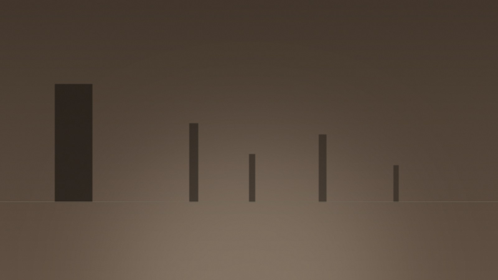

게임 엔진의 도시에서 자율 세계까지자율 세계, 스스로 규칙을 만드는 세계의 등장PART 1

스스로 규칙을 만들고, 그 안의 존재들이 알아서 살아가는 세계가 생겨나고 있다. 2024년 여름 부천국제판타스틱영화제의 한 무대에서 나는 이 세계에 '자율 세계'라는 이름을 붙여 소개했다. 2년이 지난 지금 그때 무대에서 한 말을 다시 꺼내 정리한다. 그사이 절반쯤은 현실이 됐고, 나머지 절반은 여전히 오고 있는 중이다.
시리즈 안내 : 이 시리즈는 2024년 7월 7일 부천국제판타스틱영화제 BIFAN+ 컨퍼런스에서 한 발표 "자율 세계의 등장과 새로운 창작 환경"을 2년 뒤에 1인칭으로 다시 정리한 것이다. 무대에서는 '자율 세계를 구축하기 위한 새로운 창작 문화'라는 표현을 가져와 이야기를 열었다. 이 글은 세 편 중 첫 번째다.
01무대에 서기 전에 들은 것
컨퍼런스 첫째 날과 발표 당일, 나는 같은 무대의 다른 발표들을 틈틈이 들었다. 듣다 보니 이야기가 두 갈래로 나뉘고 있었다. 한쪽에는 새로운 기술을 실제 작업에 붙여 본 경험담이 있었고, 다른 쪽에는 이 변화를 창작자가 어떻게 받아들여야 하는가 하는 생존의 질문이 있었다. 한쪽이 도구를 살피는 이야기라면, 다른 쪽은 사람의 앞날을 걱정하는 이야기였다.
무대에 오르며 나는 내 자리를 조금 다른 곳에 두기로 했다. 도구를 살피기 전에, 그리고 창작자의 미래를 걱정하기 전에, 지금 무언가 새로운 존재가 생겨나고 있다는 사실 자체를 먼저 직시하자는 것이었다. 스스로 살아가는 세계와 그 안의 존재들. 그것이 무엇인지부터 눈으로 확인하고 나서야 창작자 이야기를 할 수 있다고 생각했다.
02빨간 약과 파란 약
이야기는 익숙한 영화에서 시작했다. 무대 화면에 빨간색과 파란색 알약 두 개를 띄웠다. 매트릭스를 기억하는 사람이라면 뜻을 알아챘을 것이다. 1999년의 1편부터 이어진 트릴로지는 가상 세계에 대한 상상력의 원형 같은 작품이었고, 오랜 공백 끝에 2021년 4편이 나왔다.
솔직한 소감을 무대에서도 말했다. 18년 만에 다시 만난 매트릭스는 이전만큼의 임팩트가 없었다. 영화가 나빠져서가 아니라, 그사이 초현실적이던 설정들이 우리 일상 쪽으로 너무 가까이 와 버렸기 때문이다. 초월적 가상 세계라는 소재가 더는 상상의 영역이 아니게 됐다는 것. 영화의 감흥이 줄어든 자리에 현실의 실감이 들어와 있었다.
그 실감을 만든 것 중 하나가 게임 엔진이다. 영화 개봉에 맞춰 공개된 'The Matrix Awakens'는 언리얼 엔진 5로 만든 데모였는데, 영화의 연출 기법을 그대로 따르는 장면들이 사실은 전부 실시간 렌더링이었다. 촬영된 영상을 트는 것이 아니라 지금 이 순간 계산되어 그려지는 세계. 정해진 단방향 서사가 아니라 실시간으로 상호작용하는 스토리텔링이 가능해진 것이다.
03살아 있는 도시
그 데모 안에는 거대한 도시가 통째로 들어 있었다. 도시를 걷는 10만 명이 넘는 사람들과 도로를 달리는 차들은 누가 한 명씩 조종하는 것이 아니라, 주어진 규칙 안에서 스스로 판단하며 움직이는 자율적인 개체들이었다. 시간과 날씨를 바꿀 수 있었고, 건물들은 몇 가지 규칙 안에서 생성되는 프로시저럴 디자인을 따라 무한히 만들어지고 변형될 수 있었다.
나는 이 대목이 이 이야기 전체의 씨앗이라고 생각한다. 사람이 도시를 한 채씩 지어 넣는 것이 아니라 규칙을 정해 두면 도시가 스스로 자라난다. 사람이 행인 한 명씩을 움직이는 것이 아니라 행인들이 알아서 길을 건넌다. 창작자의 손이 닿는 자리가 사물에서 규칙으로 올라간 셈이다. 이때만 해도 이것은 그래픽 데모의 인상적인 기능이었다. 그런데 이 구조가 이후 몇 년 동안 여러 방향에서 반복해 나타난다.
04내 지갑 속의 단역 배우
그 세계에는 주인공만 있는 것이 아니다. 플레이어가 조종하는 캐릭터가 있고, 그 곁을 스쳐 가는 무수한 NPC가 있다. 매트릭스의 배급사 워너 브라더스는 영화 홍보의 하나로 이 단역들을 NFT로 만들어 팔았다. 메타휴먼으로 생성된 얼굴 하나하나가 고유한 소유물이 된 것이다.
나도 하나를 샀다. 발표하던 그날에도 그 캐릭터는 내 블록체인 지갑에 들어 있었고, 나는 무대에서 그 사실을 공개하며 상상 하나를 보탰다. 내가 소유한 이 단역 배우가 다른 영화나 게임에 출연하고, 그 수익의 일부가 소유자인 나에게 돌아오는 시스템. 기술적으로는 그때도 충분히 만들 수 있는 구조였다. 얼굴과 신원이 있는 디지털 존재가 소유되고, 출연하고, 정산되는 흐름. 배급사는 약간의 게임 요소 말고는 더 나아가지 않았지만, 나는 그 안에서 소유 가능한 캐릭터가 하나의 IP이자 수익 모델로 자라날 가능성을 봤다.
05대본 없는 배우
외형이 생기고 소유가 생겼으니, 다음 질문은 지능이었다. 무대에서 소개한 Inworld는 AI 캐릭터를 만들어 주는 LLM 기반 솔루션이었다. 캐릭터의 외형에 성격과 배경 이야기를 텍스트로 입력하면, 그 설정대로 말하고 반응하는 NPC가 만들어진다. 미리 써 둔 대사를 재생하는 것이 아니라 매 순간 대화를 생성하는 존재라서, 같은 질문에도 매번 조금씩 다른 답이 돌아온다.
Inworld의 코파운더는 TED 무대에서 '칼렙'이라는 AI 에이전트를 시연했다. 시연은 연출된 상황극이었지만, 참여자가 말을 걸면 칼렙이 그 음성에 실시간으로 반응하며 장면을 끌고 갔다. 정해진 분기를 고르는 것이 아니라 스토리가 그 자리에서 생성되는 것이다. 나는 이것을 무한 생성 스토리텔링이라고 불렀다. 대본이 있는 세계에서는 이야기의 총량이 대본의 두께로 정해지지만, 대본 없는 배우가 등장하면 이야기는 만나는 사람의 수만큼 생겨난다.
06스스로 살림을 꾸리는 캐릭터들
지능을 얻은 캐릭터에게 남은 것은 제 살림이다. 블록체인이라고 하면 많은 사람이 투자와 자산부터 떠올리지만, 내가 주목한 것은 다른 쪽이었다. 계약, 약정, 거래 같은 신뢰 기반의 상호작용을 디지털 안에서 구현하는 스마트 컨트랙트. 그 성격 때문에 블록체인은 '월드 컴퓨터'라고 불리기도 한다. 세계 하나를 돌리는 데 필요한 규칙과 장부를 대신 맡아 주는 기계라는 뜻이다.
무대에서 든 사례는 Parallel이라는 IP의 'Colony'라는 게임이었다. 이 세계의 캐릭터들은 하나하나가 NFT로 소유권이 부여되어 있고, 각자 자기 블록체인 지갑을 갖고 있다. 게임 안에서 광물을 캐면 토큰이 쌓이고, 캐릭터들끼리 스마트 컨트랙트로 아이템을 교환한다. 이 살림은 사람의 손을 기다리지 않고 돌아가는 구조였다. 지능이 있고, 소유되고, 자기 재산으로 경제 활동을 하는 캐릭터. 셋이 한 몸에 모인 것이다.
07자율 세계라는 이름
이렇게 구축된 세상을 웹3 쪽에서는 '자율 세계(Autonomous World, AW)'라고 부르기 시작했다. 스스로 규칙을 세우고, 그 안의 존재들이 알아서 관계를 맺으며 살아가는 세계. 기술의 측면에서도 독특하지만 나는 스토리텔링의 측면에서 더 독특한 개념이라고 생각했다. 세계관을 만드는 일과 세계를 만드는 일이 여기서 처음으로 같은 일이 되는 것 아닐까.
이 글을 다시 정리하는 2026년 여름의 시점에서 보면, 그때의 낯선 조합들은 이제 낯설지 않다. AI 에이전트라는 말은 그 2년 사이에 업계 용어에서 일상어가 됐고, 자기 지갑을 가진 에이전트가 값을 흥정하고 결제하는 구조는 이제 표준을 논의하는 단계까지 왔다. 대본 없는 배우들은 게임 밖으로 나와 온갖 서비스에 들어앉았다. 2024년의 무대에서 나는 이것들을 신기한 조짐으로 소개했는데, 지금은 그 조짐들이 바닥에 깔린 전제가 된 셈이다.
다만 그날 발표의 순서에는 이유가 있었다. 세계와 존재를 먼저 보여 준 것은, 그다음 질문이 거기서 출발하기 때문이다. 이 세계는 가상에 갇혀 있지 않고 현실 쪽으로 계속 손을 뻗는다. 현실이 통째로 디지털로 복제되고, 그 위에서 에이전트들이 현실의 일을 대신하기 시작할 때, 가상 세계는 더 이상 현실의 보조 수단이 아니게 된다. 다음 편에서 그 이야기를 이어가겠다.